Robot suiveur de ligne
En route pour le concours Robot
Date : Janvier 2024
Contexte
Dans le cadre de l'IUT, j’ai participé à un concours de robotique. L'objectif était de fabriquer un robot capable de suivre une ligne au sol et de réaliser différents défis pour accumuler des points. L’équipe avec le plus de points remporterait le concours.
Pour préparer le robot, il fallait qu'il suive une ligne, identifie les intersections et reconnaisse divers marqueurs sur la piste. Il devait également détecter les obstacles à l'aide d'un capteur ultrason et s’arrêter grâce à un interrupteur de fin de course.
Les défis incluaient par exemple :
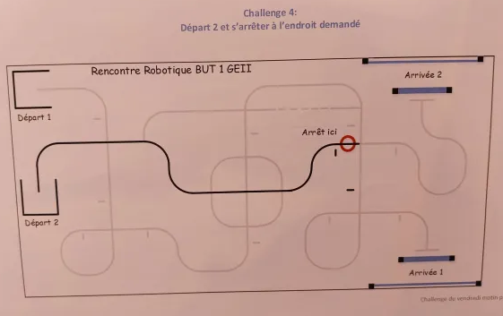
Pour ce challenge, nous avons mis en place une machine à états.
Voici un exemple :
-
État 0 : Activer le suivi, compter 4 intersections et passer à l'état suivant.
État 1 :Si une signalisation est détectée à droite, le robot s’arrête.
Fin défit réussi
on devra aussi ajouter un voyant lumineux pour indiquer la détection des intersections, facilitant ainsi le débogage du robot.
Diffèrent élément à disposition :
Arduino Mega :
Cette carte servira de cerveau au robot, permettant la collecte et le traitement des informations. Elle comprend 54 broches d'entrée/sortie, dont certaines offrent un accès aux Timers, ainsi que 16 entrées analogiques et 4 UART pour les communications série. Elle dispose également d'un port USB pour la programmation et d'une prise d'alimentation (7-12V). Son horloge tourne à 16 MHz, et elle est équipée de 256 Ko de mémoire flash. Plus de détails sont disponibles [ici] ( https://store.arduino.cc/products/arduino-mega-2560-rev3 ).
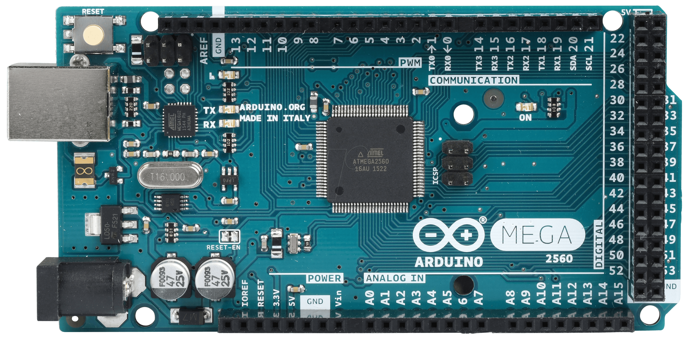
Module Grove :
Ce module Grove se branche directement sur l’Arduino et facilite les connexions des capteurs en les rendant plus stables. Il utilise des connecteurs standardisés à 4 broches (signal 1, signal 2, VCC et GND), permettant de relier des capteurs aux broches numériques de 0 à 21 et aux broches analogiques de 0 à 15. Il comprend également des connecteurs à 3 broches pour les servomoteurs. Plus de détails sont disponibles [ici] ( https://www.seeedstudio.com/Grove-Mega-Shield-v1-2.html ).
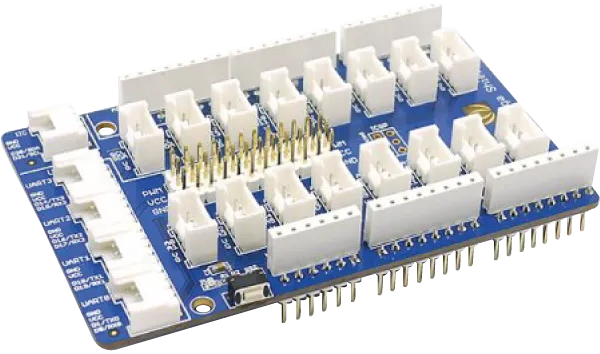
Carte moteur :
Cette carte permet de contrôler la vitesse et la direction de deux moteurs à courant continu à l’aide de deux ponts en H (4 quadrants). La vitesse est régulée par deux signaux PWM à rapport cyclique variable sur les ports 3 et 11, tandis que la direction est gérée via les entrées 12 et 13. Elle peut fournir un courant de 2A par moteur. De plus, elle permet de connecter son alimentation au port "Vin" de l’Arduino. Il n'existe pas de bibliothèque dédiée pour cette carte.
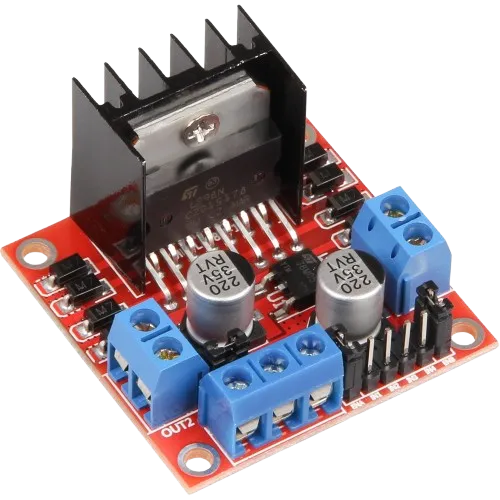
Capteurs infra-rouges QTRC-8RC :
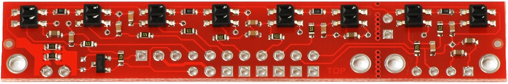
Ce module, équipé de capteurs infrarouges numériques, sera utilisé pour lire la piste. Pour effectuer une mesure, il est nécessaire d’émettre une impulsion de 10 μs, ce qui permet de charger un condensateur. Ensuite, on configure le microcontrôleur en mode entrée pour mesurer la décharge de ce condensateur. Plus le fond est sombre, plus la décharge sera longue. Par exemple, la courbe jaune représente la sortie d'un capteur infrarouge sur un fond noir, tandis que la courbe bleue illustre l'interprétation par le microcontrôleur. [Pololu](https://www.pololu.com/product/961).
Motoréducteur avec encodeur :
Tension: 3 à 6 Vcc - Rapport de réduction : 50:1 - Vitesse à vide : 300 rpm - Couple 0.40 Kg - Courant en charge 150 mA Max - Motoréducteur miniature avec encodeur magnétique et pignons en métal
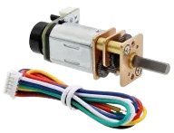
Capteur ultrasons :
Ce capteur nous permet de connaître la distance d’un objet Site : (https://wiki.seeedstudio.com/Grove-Ultrasonic_Ranger/ ).
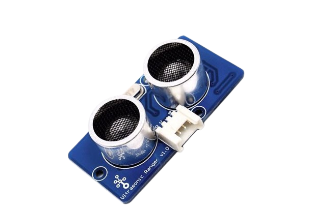
Interrupteur de contact :
Grâce à cet interrupteur normalement ouvert, nous pouvons savoir si le robot touche la barre en bois.
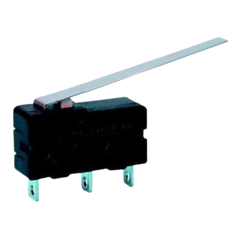
LED RGB :
Cette LED nous permet de visualiser dans quel état se trouve le robot. Site : ( https://wiki.seeedstudio.com/Grove-Chainable_RGB_LED/ ).
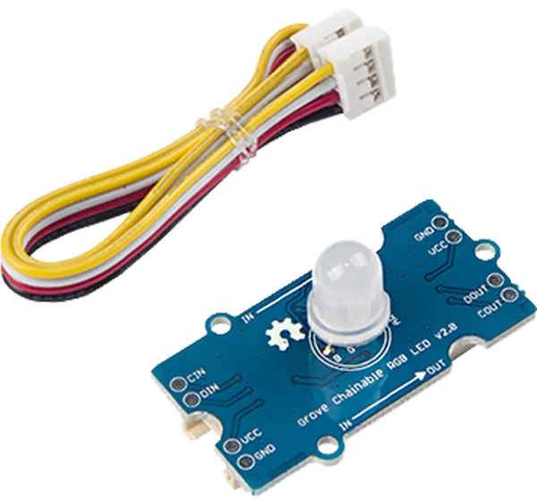
Processus de Conception
La première étape consiste à analyser chaque composant fourni par notre professeur
Nous commençons par s’approprier le module QTR-8RC Reflectance Sensor Array, un capteur infrarouge dédié à la détection de piste. Voici le lien pour accéder aux informations détaillées : QTR-8RC Reflectance Sensor Array.
Le code de test des yeux correspond à ça :
#include < QTRSensors.h >
QTRSensors qtr;
const uint8_t SensorCount = 8;
uint16_t sensorValues[SensorCount];
void setup(){
// Configure the sensors
qtr.setTypeRC();
qtr.setSensorPins((const uint8_t[]){31, 33, 35, 37, 39, 41, 43, 45}, SensorCount);
qtr.setEmitterPin(2);
delay(500);
pinMode(LED_BUILTIN, OUTPUT);
digitalWrite(LED_BUILTIN, HIGH); // turn on Arduino's LED to indicate calibration
// 2.5 ms RC read timeout (default) * 10 reads per calibrate() call
// = ~25 ms per calibrate() call.
// Call calibrate() 400 times to make calibration take about 10 seconds.
for (uint16_t i = 0; i < 400; i++)
{
qtr.calibrate();
}
digitalWrite(LED_BUILTIN, LOW); // turn off Arduino's LED to indicate end of calibration
// Print the calibration minimum values measured when emitters were on
Serial.begin(9600);
for (uint8_t i = 0; i < SensorCount; i++)
{
Serial.print(qtr.calibrationOn.minimum[i]);
Serial.print(' ');
}
Serial.println();
// Print the calibration maximum values measured when emitters were on
for (uint8_t i = 0; i < SensorCount; i++)
{
Serial.print(qtr.calibrationOn.maximum[i]);
Serial.print(' ');
}
Serial.println();
Serial.println();
delay(1000);
}
void loop(){
// Read calibrated sensor values and obtain a measure of the line position
// from 0 to 5000 (for a white line, use readLineWhite() instead)
uint16_t position = qtr.readLineBlack(sensorValues);
// Print the sensor values as numbers from 0 to 1000, where 0 means maximum
// reflectance and 1000 means minimum reflectance, followed by the line position
for (uint8_t i = 0; i < SensorCount; i++)
{
Serial.print(sensorValues[i]);
Serial.print('\t');
}
Serial.println(position);
delay(250);
}
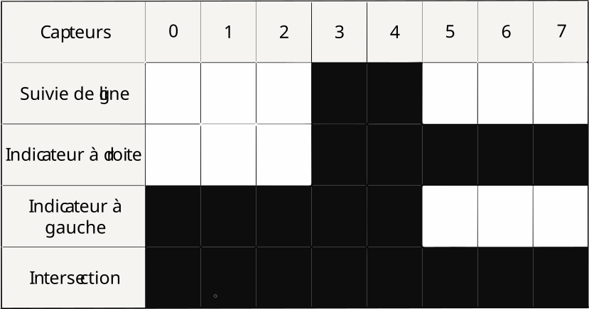
Carte moteur :
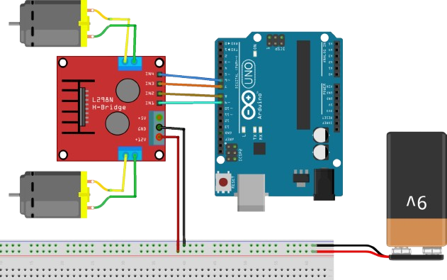
Après quelques tests avec la carte, nous avons élaboré ce code de test pour les moteurs et le contrôleur de moteurs.
// Déclaration des pins pour les moteurs
const int motorPin1 = 13;
const int motorPin2 = 12;
const int motorPin3 = 11;
const int motorPin4 = 10;
int speed = 180;
void setup() {
// Configuration des pins en sortie
pinMode(motorPin1, OUTPUT);
pinMode(motorPin2, OUTPUT);
pinMode(motorPin3, OUTPUT);
pinMode(motorPin4, OUTPUT);
// Contrôle du moteur A dans les deux directions
analogWrite(motorPin1, speed);
delay(2000);
analogWrite(motorPin1, 0);
delay(200);
analogWrite(motorPin2, speed);
delay(2000);
analogWrite(motorPin2, 0);
// Contrôle du moteur B dans les deux directions
analogWrite(motorPin3, speed);
delay(2000);
analogWrite(motorPin3, 0);
delay(200);
analogWrite(motorPin4, speed);
delay(2000);
analogWrite(motorPin4, 0);
// Ajustement des vitesses dans les deux directions
analogWrite(motorPin1, speed);
analogWrite(motorPin3, speed + 30);
}
void loop() {
// Boucle vide car les actions se font dans le setup
}
Encodeur :
Les encodeurs présentent une particularité :
leur précision est très élevée, ce qui nécessite d'ignorer certaines impulsions afin d'éviter de surcharger la carte.
void suivi(byte valeur, int vitesse = 0) {
switch (valeur) {
// Tourner à droite fort
case 1:
case 3:
Timer1.setPwmDuty(motorPin1, motorSpeeds[7] + vitesse); // Moteur Droit
Timer3.setPwmDuty(motorPin3, 0); // Moteur Gauche
norman = 1;
break;
// Tourner à droite moyen
case 2:
case 6:
Timer1.setPwmDuty(motorPin1, motorSpeeds[6] + vitesse);
Timer3.setPwmDuty(motorPin3, motorSpeeds[1] + vitesse);
break;
// Tourner à droite faible
case 4:
case 12:
Timer1.setPwmDuty(motorPin1, motorSpeeds[4] + vitesse);
Timer3.setPwmDuty(motorPin3, motorSpeeds[1] + vitesse);
break;
// Aller tout droit
case 8:
case 16:
case 24:
Timer1.setPwmDuty(motorPin1, motorSpeeds[5] + vitesse);
Timer3.setPwmDuty(motorPin3, motorSpeeds[5] + vitesse - (valeur == 16 ? 15 : 0));
break;
// Tourner à gauche faible
case 32:
case 48:
Timer1.setPwmDuty(motorPin1, motorSpeeds[3] + vitesse);
Timer3.setPwmDuty(motorPin3, motorSpeeds[5] + vitesse);
break;
// Tourner à gauche moyen
case 64:
case 96:
Timer1.setPwmDuty(motorPin1, motorSpeeds[2] + ecart + vitesse);
Timer3.setPwmDuty(motorPin3, motorSpeeds[6] + vitesse);
break;
// Tourner à gauche fort
case 128:
case 192:
Timer1.setPwmDuty(motorPin1, 0);
Timer3.setPwmDuty(motorPin3, motorSpeeds[7] + vitesse);
norman = (valeur == 128) ? 0 : norman;
break;
// Cas de croisement ou de signalisation
case 27:
case 216:
case 255:
Timer1.setPwmDuty(motorPin1, motorSpeeds[6] + vitesse);
Timer3.setPwmDuty(motorPin3, motorSpeeds[6] + vitesse);
break;
// Aucun signal (ajustement de direction)
case 0:
if (norman == 1) {
Timer1.setPwmDuty(motorPin1, motorSpeeds[6] + vitesse);
Timer3.setPwmDuty(motorPin3, 0);
}
else {
Timer1.setPwmDuty(motorPin1, 0);
Timer3.setPwmDuty(motorPin3, motorSpeeds[6] + vitesse);
}
break;
// Par défaut, avancer tout droit
default:
Serial.println("default");
Timer1.setPwmDuty(motorPin1, motorSpeeds[5] + vitesse);
Timer3.setPwmDuty(motorPin3, motorSpeeds[5] + vitesse);
break;
}
}
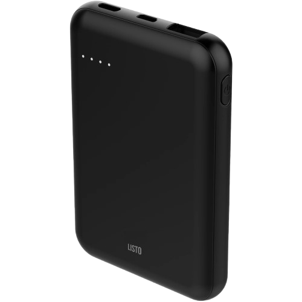
Maintenant que tous les tests ont été réalisés avec succès et que le système fonctionne correctement, il est nécessaire d'ajouter des supports pour l'ensemble des composants.
Support Infrarouge :
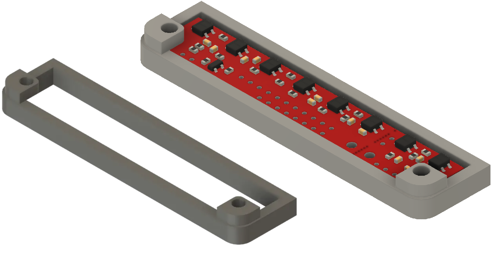
Il permet de fixer les capteur infrarouge sous le robot tout en permettant de les protéger des lumière extérieur qui pourraient fausser les mesures
Support Ultrason:
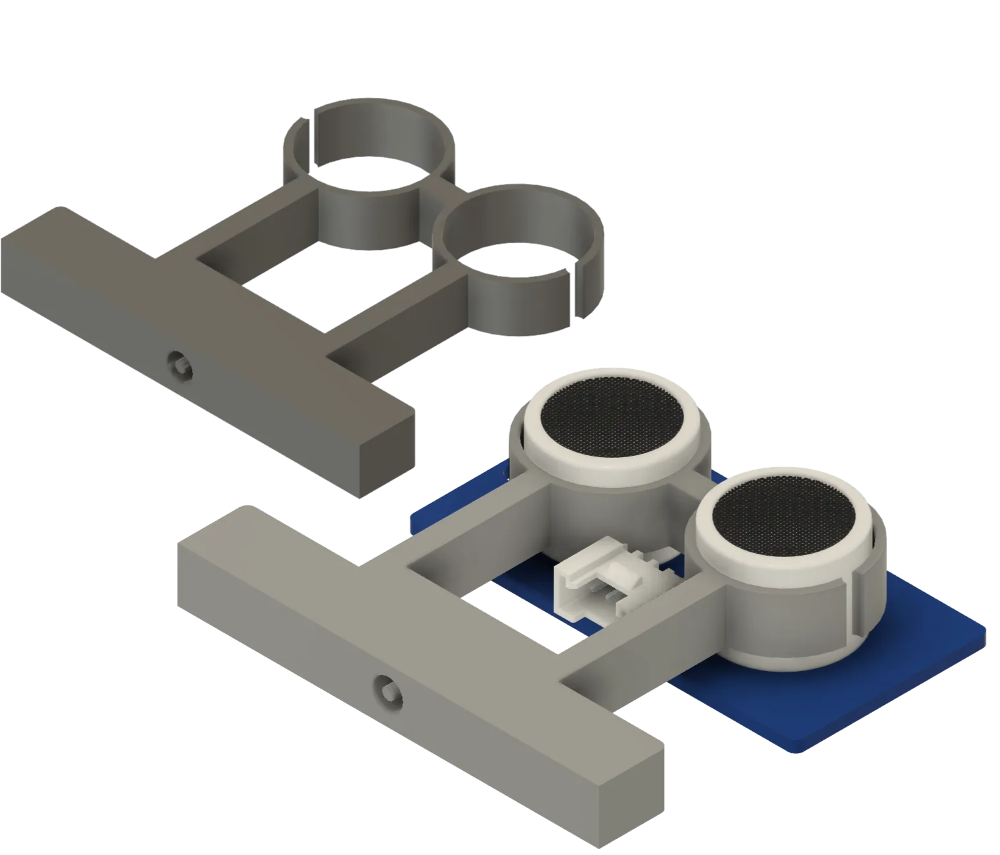
Il sert à assembler le capteur ultra son et le servo moteur pour permettre au capteur US d’être mobile
Support servo:
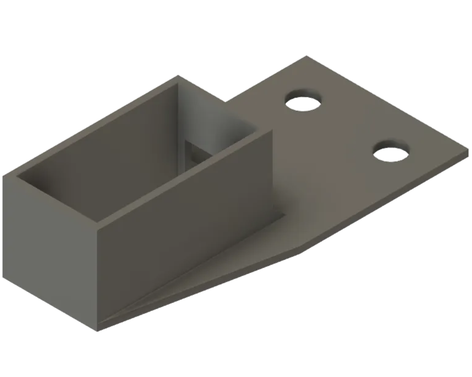
Fixe le servo moteur sur le chassie du robot
Support pour la batterie externe:
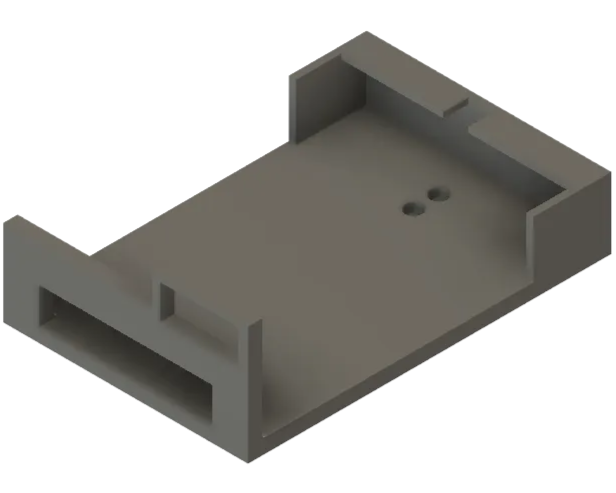
il permet de fixer la batterie a l’arrière du robot tout en garantissant une répartition du poids
#include "Ultrasonic.h"
Ultrasonic ultrasonic(12); // initialise un capteur ultrason sur la broc
void setup() {
Serial.begin(9600);
}
void loop() {
long RangeInCentimeters;
Serial.println("La distance aux obstacles devant est : ");
RangeInCentimeters = ultrasonic.MeasureInCentimeters(); // deux mesures
Serial.print(RangeInCentimeters); // 0~400 cm
Serial.println(" cm");
delay(250);
}Conclusion
Ce projet a été particulièrement enrichissant, car il nous a permis de travailler en groupe pour atteindre un objectif commun avec une échéance précise. Le concours final, qui s'est déroulé sur trois jours, a été une expérience formatrice. Il nous a appris à réfléchir et à trouver des solutions malgré le stress et les imprévus. Bien que nous n'ayons pas remporté le concours, nous sommes extrêmement satisfaits de nos résultats. Cette expérience nous a permis de nous évaluer face aux autres IUT et de démontrer notre capacité à nous adapter à des règles changeantes et à surmonter de nouvelles difficultés.